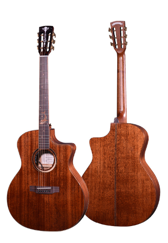
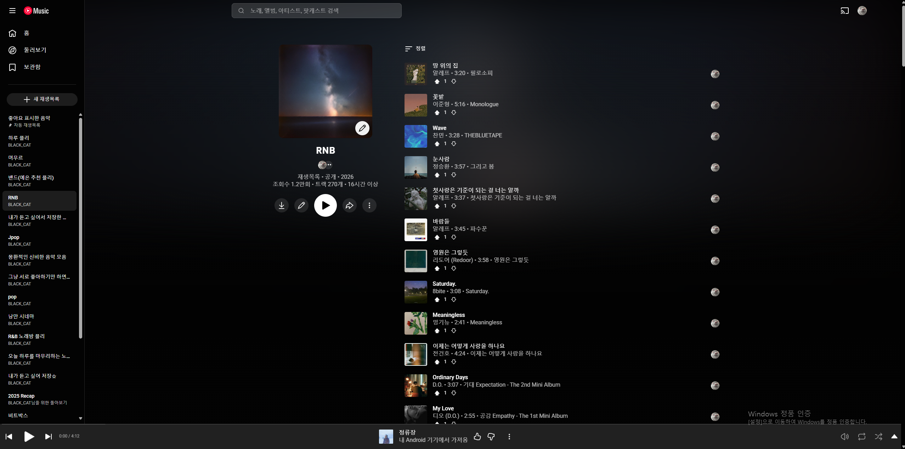
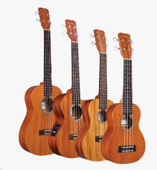
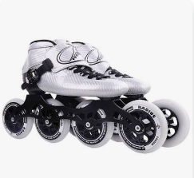
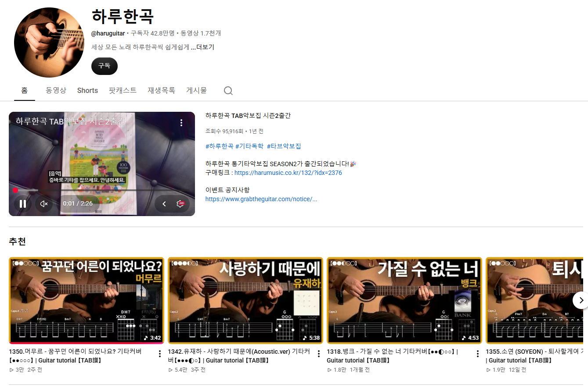

기타
요즘에 가끔 자취방에서 혼자 연습해보고 있습니다.
MY HOBBY
가장 좋아하는 활동은 R&B 노래를 들으며 편안하게 휴식 시간을 보내는 것입니다.

제가 가장 좋아하는 활동은 R&B 노래를 듣는 것입니다. 리듬감 있으면서도 편안한 분위기의 음악을 들으면 복잡했던 생각을 정리하고 기분을 전환할 수 있습니다.
좋아하는 곡을 재생목록에 모아 두고, 쉬는 시간이나 이동할 때 듣는 편입니다. 음악을 들으며 마음에 드는 멜로디를 기타나 우쿨렐레로 연주해 보는 것도 좋아합니다.
음악을 듣는 것도 좋아하지만, 가끔씩 혼자 있을때 홀로 감성에 취해 직접 연주하는 것도 특히 좋아합니다. 리듬감 있고 편안한 R&B 음악을 들으며 쉬거나 연습할 곡을 찾습니다. 그래서 다양한 기타 코드와 연주법은 하루한곡 YouTube 채널을 통해서 연습합니다.

요즘에 가끔 자취방에서 혼자 연습해보고 있습니다.

기타보다 비교적 쉬워서 가볍게 치고 싶을때 연주합니다.
편안한 R&B 음악을 들으며 휴식 시간을 보냅니다.

본가에 있을때에 시간이 남고 심심할때면 인라인스케이트를 타며 시간을 보냅니다.
저녁에 시간이 있을때마다 친구와 게임을 합니다.
혼자서도 가끔씩 하는 게임입니다...

GUITAR CHANNEL
기타 연주법을 찾아볼 때 주기적으로 보는 YouTube 채널입니다. 좋아하는 노래의 연주 방법을 보면서 한 곡씩 연습합니다.